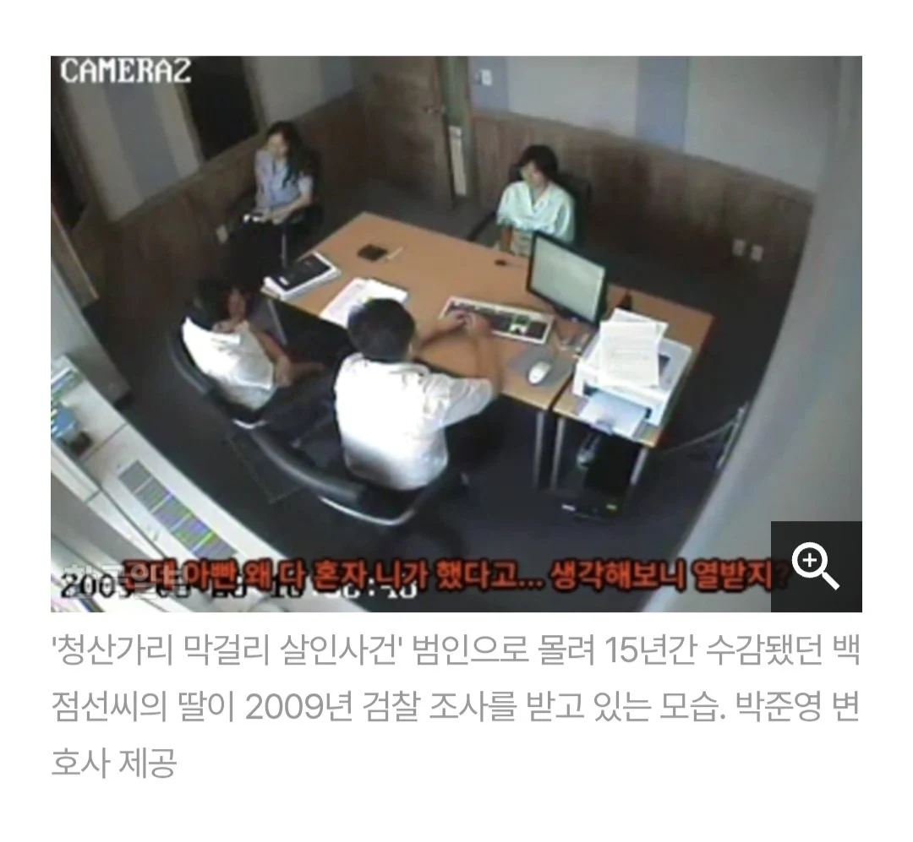
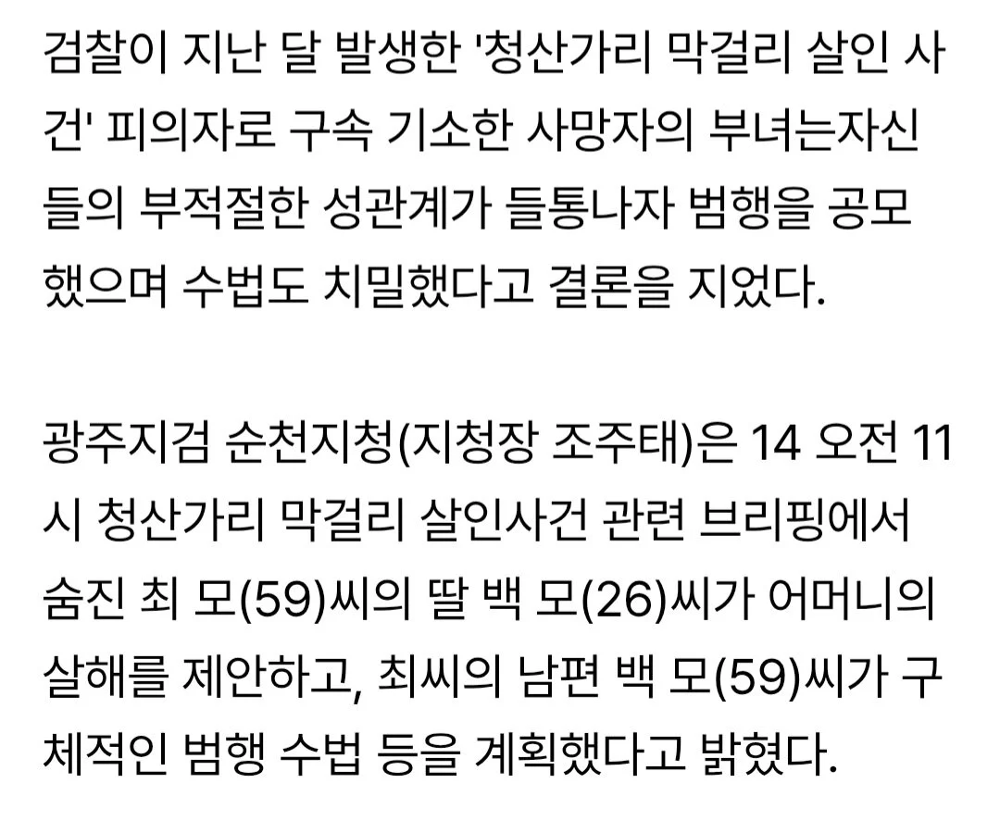
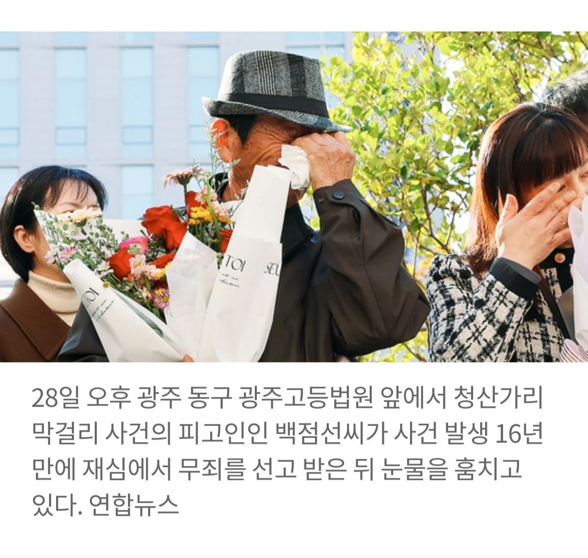
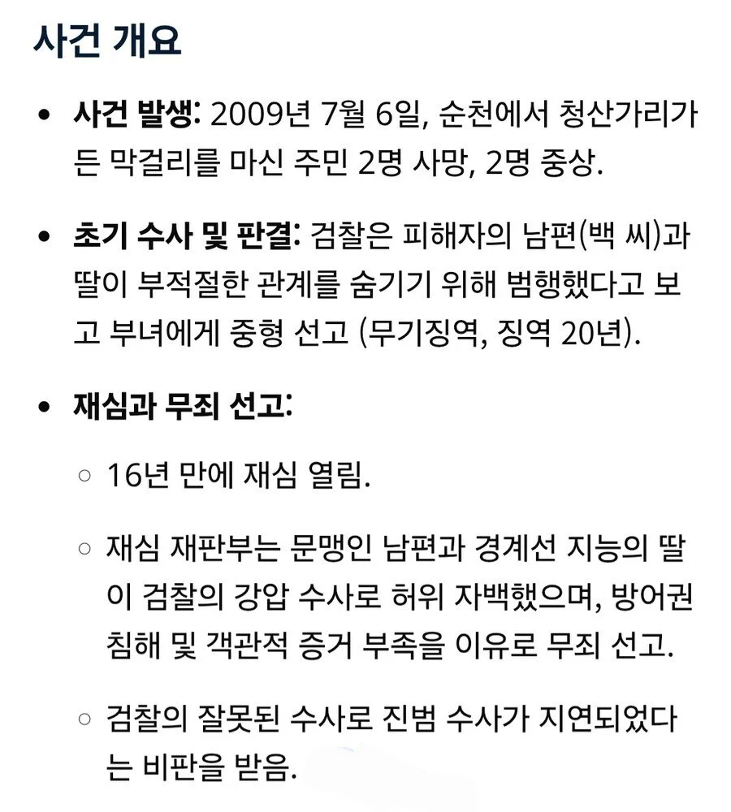
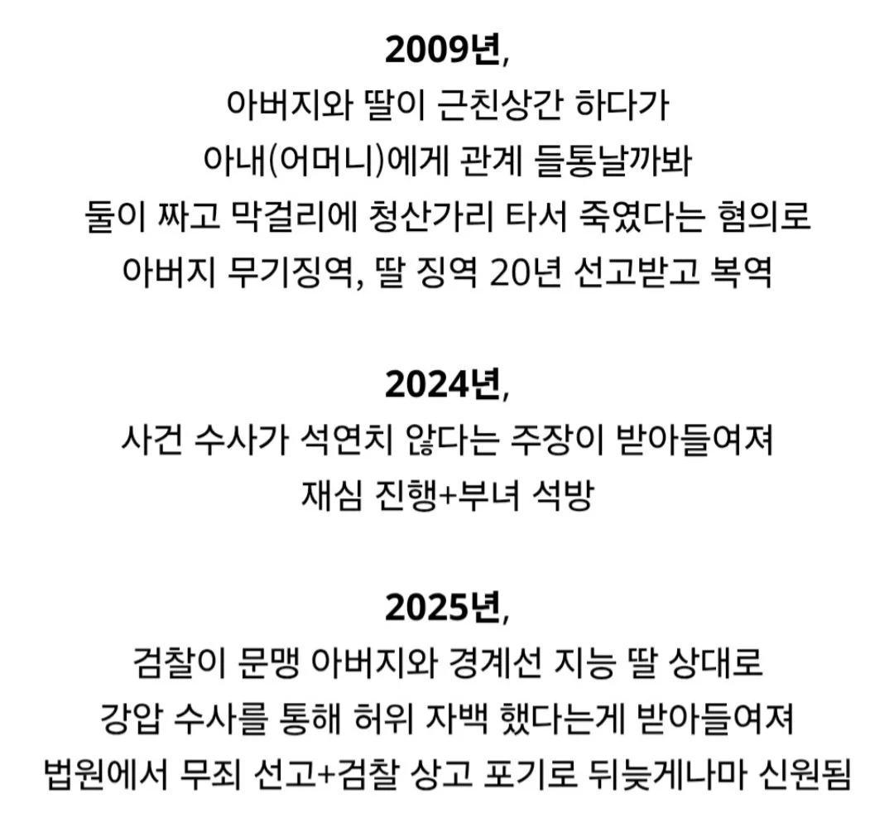

15년이 지나서야 무죄로 석방됨
강압수사를 통한 허위 자백이었다는 게 받아들여짐





15년이 지나서야 무죄로 석방됨
강압수사를 통한 허위 자백이었다는 게 받아들여짐
동네에 피해자랑 사이가 안좋던 사람이 있었다고 함. 실제 사건 초기에는 용의선상에 올라가 있기도 했음. 의심스러운 부분도 있었음. 근데 검찰에서 부녀가 범인이라고 몰고가는 통에 수사가 제대로 이루어지지 않았고, 그 사람은 사건 직후 타지로 이사가 버려서 이제는 진범을 찾을 수도 없다고 함.
그사람이 누군지는 알지만 시간이 지나버려 증거도 없고 그러니 그냥 흐지부지 되어 버렷네...
저래놓고 보상도 제대로 안해주겠지
없이 사는 사람한테는 너무 나도 잔인한 나라
알겟는데 그럼 수사하고 강압한애들은 왜 처벌을 안함? 법조인들은 처벌하면 안되는거임?
저거 법원에서 당시 검찰이 한글을 거의 읽지 못하거나 경계선 지능 상태인 있는 부녀를 상대로 '유도신문' 등 강압수사를 했다고 판단해서 13년 만에 무죄를 선고하고 검찰이 상고를 포기하면서 최종 확정됨.
당시 검사는 알려진 바로는 불미스러운 일로 건찰에서 잘린 후 변호사 개업한 것으로 알려져 있으나 이후 자기가 감찰에 청탁해 주겠다며 의뢰인에게 돈을 받았다가 추징금&실형 살았음. 아마 변호사 자격증도 박탈되었을꺼라고 함.
저 사람들 인생은 누가 보상해주냐... 시발...
저 수사한 견찰들은 뭐하고 있을라나
15년...
최소 20억씩은 주시겠죠? ㅂㄷㅂㄷ
어림없지 200만원!
15년이면 따블로 30년은 집,밥 걱정없이 살게 해줘야하는거 아님?
이거 아빠 사형시키라라고 난리났었지 자극적이고 충격적이라 생각남
그럼 진범은 누구인거야?